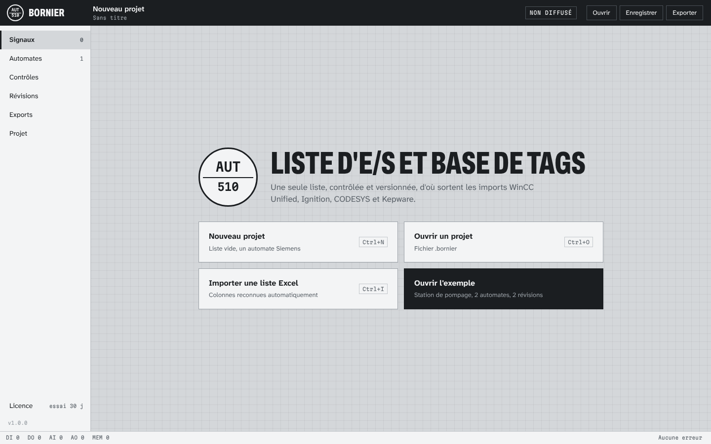
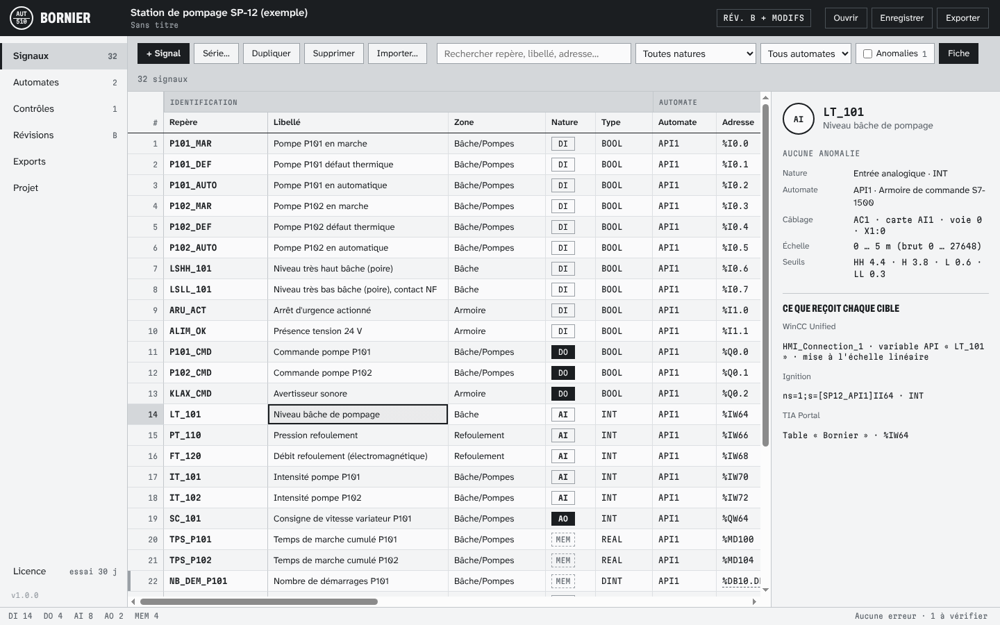
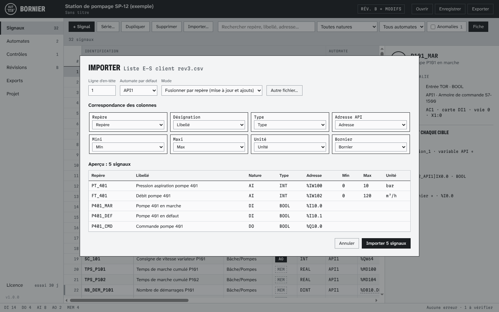
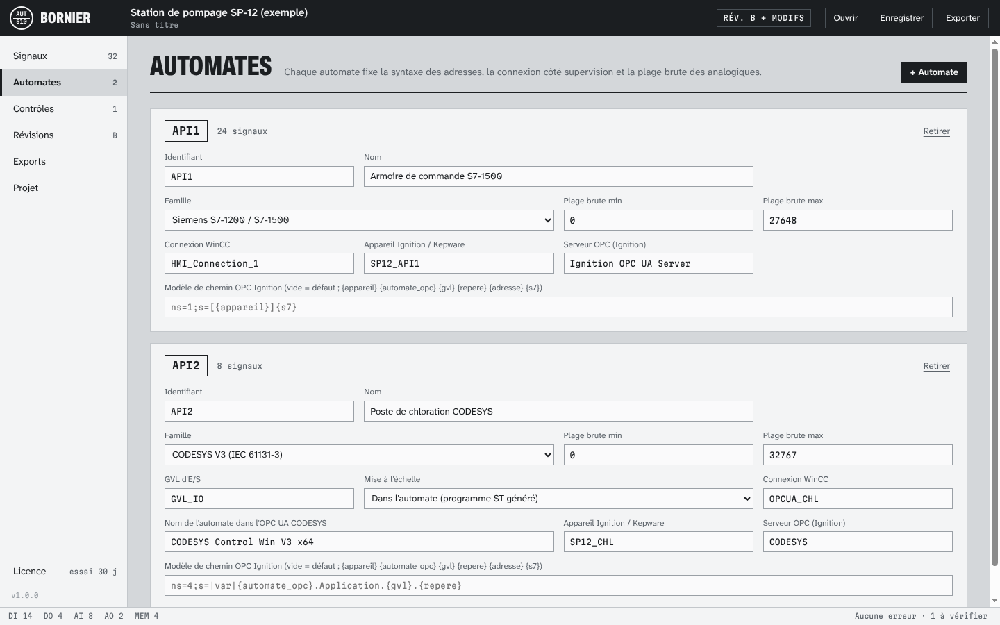
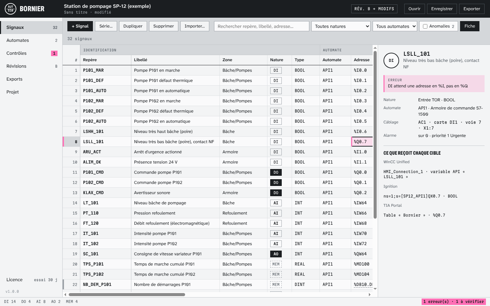
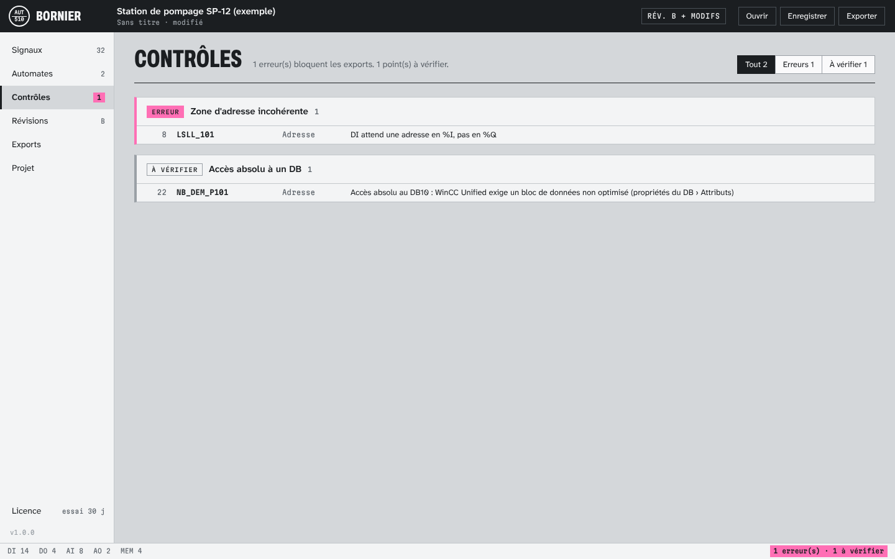
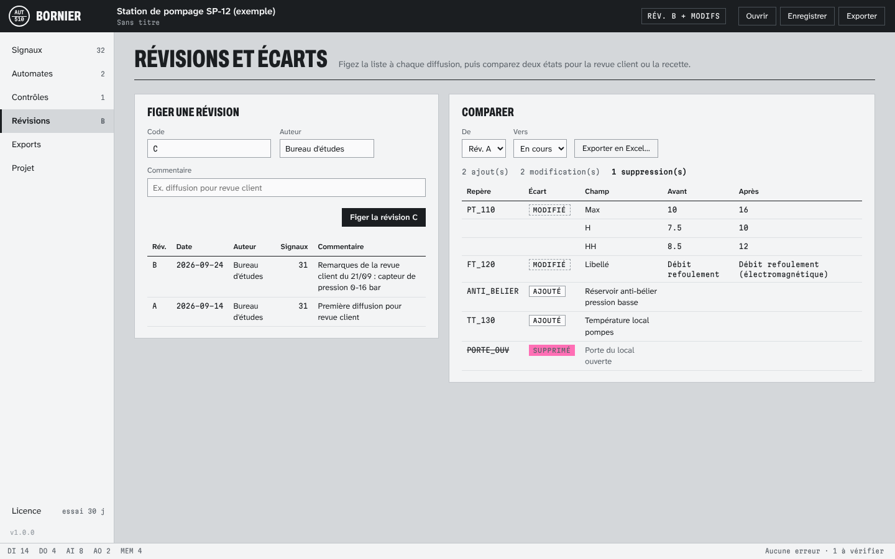
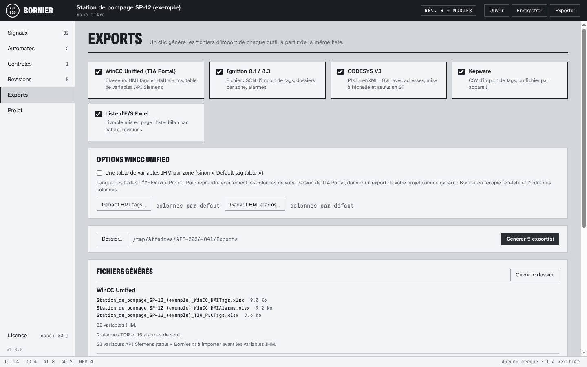
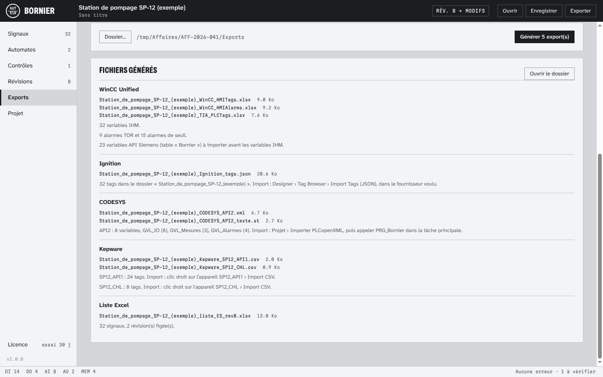
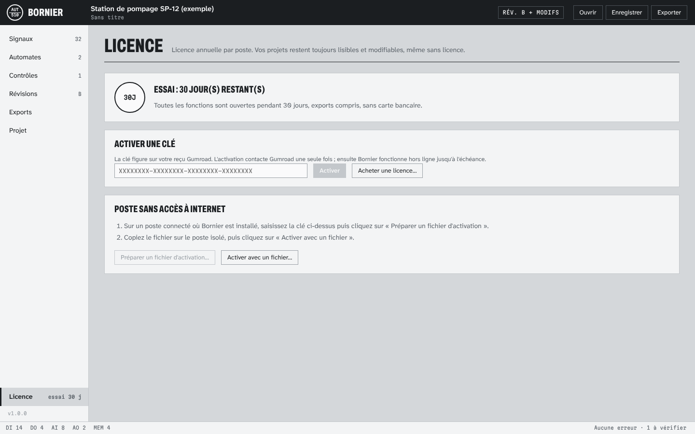

Installer
Windows 10 ou 11 (64 bits) : lancez Bornier-Setup-1.0.0.exe. L'installation se fait dans votre profil, sans droits administrateur (vous pouvez choisir un autre dossier). Les fichiers .bornier s'ouvrent ensuite d'un double clic.
L'installeur n'est pas encore signé : Windows SmartScreen peut afficher « Windows a protégé votre ordinateur ». Cliquez sur Informations complémentaires puis Exécuter quand même. Pour vérifier le fichier, comparez son empreinte avec SHA256SUMS.txt : certutil -hashfile Bornier-Setup-1.0.0.exe SHA256.
Linux (x86_64) : rendez le fichier Bornier-1.0.0-x86_64.AppImage exécutable (chmod +x) puis lancez-le.
Bornier fonctionne hors ligne. Il ne se connecte à Internet qu'une fois, pour activer une clé de licence.
Démarrer

Le plus rapide pour découvrir l'outil : Ouvrir l'exemple. C'est une station de pompage fictive avec deux automates (un Siemens S7-1500 et un automate CODESYS), 32 signaux et deux révisions déjà diffusées. Tout ce qui est décrit ici peut y être essayé sans risque.
Un projet Bornier est un seul fichier .bornier : la liste, les automates, les réglages et toutes les révisions figées. C'est du JSON lisible, rangé un signal par bloc : suivi dans Git, chaque modification apparaît ligne à ligne.
Saisir la liste

La grille se manie comme un tableur. Une ligne est un signal : repère, libellé, zone, nature (DI, DO, AI, AO ou MEM pour une variable mémoire), type, automate, adresse, câblage (armoire, carte, voie, bornier), échelle (min, max, unité), seuils d'alarme LL, L, H, HH, alarme d'état et priorité.
| Touche | Effet |
|---|---|
| Frappe directe, Entrée ou F2 | Modifie la cellule ; Entrée valide et descend, Tab valide et passe à droite, Échap annule |
| Flèches, Maj+flèches, Ctrl+flèches | Déplace, étend la sélection, va au bord de la liste |
| Ctrl+C / Ctrl+V | Copier et coller avec Excel. Un collage plus long que la liste ajoute des lignes (vue non filtrée et non triée). Une seule valeur collée remplit toute la sélection. |
| Ctrl+D | Recopie en série la première ligne de la sélection : repères et adresses sont incrémentés (P101 → P102, %I0.7 → %I1.0) |
| Suppr | Vide les cellules sélectionnées |
| Ctrl+Z / Ctrl+Y | Annuler, rétablir (200 étapes) |
| Ctrl+F | Recherche dans les repères, libellés et adresses |
Le bouton Fiche masque ou affiche le panneau de droite, pour voir plus de colonnes. Le bouton Série… crée d'un coup plusieurs signaux de même nature avec des repères et des adresses qui se suivent. Dupliquer copie les lignes sélectionnées. Les filtres (nature, automate, anomalies) et le tri par clic sur un en-tête ne changent pas l'ordre enregistré.
Le type se déduit de la nature (BOOL pour une entrée ou sortie TOR, INT pour une analogique) et reste modifiable. Les seuils et l'échelle sont en unités physiques : la conversion vers les valeurs brutes de la carte est faite par Bornier pour chaque cible.
Importer une liste existante

Fichier › Importer (Ctrl+I) accepte les classeurs .xlsx et .xlsm et les fichiers .csv ou .txt (séparateur et encodage détectés). Bornier trouve la ligne d'en-tête et associe les colonnes d'après leurs noms usuels en français, en anglais ou dans TIA Portal (« Mnémonique », « Désignation », « Logical Address », « Data Type »…). Vérifiez la correspondance, choisissez l'automate par défaut, puis :
- Fusionner par repère : pour les signaux déjà présents, seules les colonnes associées remplacent les valeurs existantes (une liste qui n'a que repère et libellé ne touche ni aux adresses ni aux seuils) ; les nouveaux signaux sont ajoutés ;
- Remplacer toute la liste : la liste du projet est remplacée (les révisions figées sont gardées).
Les valeurs non reconnues (nature, nombre, priorité) sont listées sous l'aperçu. Un import s'annule d'un Ctrl+Z.
Automates

- Famille : Siemens S7-1200 / S7-1500 (adresses à l'octet :
%I0.0,%IW64,%DB10.DBD4) ou CODESYS V3 (adresses à l'élément :%IX0.0,%IW2,%MD10). - Plage brute : valeurs de la carte pour le bas et le haut d'échelle (0 à 27 648 pour les cartes Siemens, 0 à 32 767 par défaut ailleurs).
- Connexion WinCC, appareil Ignition / Kepware, serveur OPC et modèle de chemin OPC : les noms tels qu'ils existent dans vos projets de supervision.
- CODESYS : nom de l'automate dans l'OPC UA CODESYS, le segment qui suit
|var|dans les nœuds du serveur OPC UA (par défautCODESYS Control Win V3 x64; recopiez celui que montre votre client OPC UA). - CODESYS : nom de la GVL des E/S, et mise à l'échelle dans l'automate (programme ST généré) ou dans la supervision.
Renommer un automate met à jour tous ses signaux ; un identifiant déjà pris est refusé. Changer la famille ne convertit pas les adresses : Bornier le rappelle, et la vue Contrôles signale celles qui ne conviennent plus.
Contrôles

%Q : la cellule est marquée, la fiche explique pourquoi, la barre d'état compte l'erreur.La liste est contrôlée à chaque frappe. Les erreurs bloquent les exports : un fichier d'import faux coûte plus cher qu'un export retardé. Les points à vérifier ne bloquent rien.
| Erreurs (bloquantes) | Points à vérifier |
|---|---|
Repère manquant, non conforme IEC 61131-3 (lettres, chiffres, _, pas de mot réservé) ou en doubleAutomate inconnu ou non renseigné Type incompatible avec la nature (un TOR doit être BOOL) Adresse manquante, non reconnue, dans la mauvaise zone ( %I pour une entrée, %Q pour une sortie), de taille incompatible avec le type, ou en doubleVoie de carte câblée deux fois Échelle invalide (min ≥ max) Seuils sur un signal TOR, seuils dans le désordre (LL < L < H < HH) Alarme d'état sur un signal non BOOL Automate sans identifiant ou en double, nom de GVL invalide, plage brute invalide |
Libellé vide (il sert de commentaire et de texte d'alarme) Adresses qui se chevauchent (ex. %IW0 et %IX0.3)Échelle non renseignée sur une analogique Unité manquante Seuil hors de l'échelle Entrée physique ouverte en écriture Variable interne placée dans la zone des E/S Accès absolu à un DB Siemens ( %DB10.DBD0) : WinCC Unified exige alors un bloc de données non optimisé |

Hystérésis des alarmes de seuil
Vue Projet : par défaut 1 % de l'échelle. Une alarme haute apparaît au seuil et ne disparaît que lorsque la mesure redescend du seuil moins l'hystérésis, ce qui évite qu'un signal bruité batte autour du seuil. Elle est appliquée dans le programme CODESYS généré et dans les alarmes Ignition ; pour WinCC Unified, réglez l'hystérésis dans les propriétés des alarmes analogiques après import.
Révisions et écarts

À chaque diffusion (revue client, mise en service, recette), figez une révision : code (A, B… ou V1, V2…), auteur, commentaire. Le projet garde une copie complète de la liste à cette date. L'en-tête affiche « Rév. B + modifs » dès que la liste a changé depuis la dernière révision.
La comparaison entre deux révisions, ou entre une révision et l'état en cours, liste les ajouts, les suppressions et les modifications champ par champ. Exporter en Excel en fait un rapport à joindre à la diffusion.
Exporter

Vue Exports (Ctrl+E) : cochez les cibles, choisissez le dossier, cliquez sur Générer. Chaque cible n'exporte que les signaux qui la concernent. Le détail des formats et de leur provenance est dans FORMATS.md.

WinCC Unified (TIA Portal)
- Importez d'abord la table de variables API (
…_TIA_PLCTags.xlsx) dans l'automate : Variables API › Importer. - Puis les variables IHM (
…_WinCC_HMITags.xlsx) : Variables IHM › Importer, et les alarmes (…_WinCC_HMIAlarms.xlsx) : Alarmes IHM › Importer.
Mode gabarit, recommandé. Les colonnes attendues par TIA Portal varient selon sa version et la langue du projet. Exportez une fois les variables et les alarmes de votre propre projet, et donnez ces fichiers à Bornier (boutons Gabarit HMI tags… et Gabarit HMI alarms…) : il recopie leur en-tête à l'identique.
Ignition 8.1 et 8.3
Designer › Tag Browser › bouton d'import › Import Tags, choisissez le fichier JSON et le fournisseur de tags. Les tags arrivent dans un dossier au nom du projet, un sous-dossier par zone. Les analogiques mises à l'échelle par Ignition sont déclarées en Float4, pour que la valeur physique ne soit pas tronquée ; les alarmes de seuil portent l'hystérésis réglée dans la vue Projet.
CODESYS V3
Projet › Importer PLCopenXML : GVL des E/S avec adresses, GVL des mesures et des alarmes, programme PRG_Bornier (mise à l'échelle, seuils avec hystérésis). Appelez PRG_Bornier au début de la tâche principale. Le fichier …_texte.st contient le même code à copier-coller.
Kepware
Clic droit sur l'appareil › Import CSV, un fichier par appareil. Le nom de l'appareil est celui saisi dans la vue Automates.
Liste Excel
Une liste d'E/S mise en page pour le client (liste, bilan par nature et par automate, historique des révisions), prête à imprimer en A3 paysage.
Licence

L'essai dure 30 jours, toutes fonctions ouvertes. Ensuite, sans licence, vos projets restent lisibles, modifiables et enregistrables : seuls les exports sont fermés.
La licence est annuelle, à compter de la date d'achat : Poste (1 poste) ou Bureau (10 postes). Collez la clé reçue par e-mail dans la vue Licence et cliquez sur Activer : Bornier vérifie la clé une seule fois auprès de Gumroad, puis fonctionne hors ligne jusqu'à l'échéance.
Poste sans Internet : sur un poste connecté où Bornier est installé, saisissez la clé et cliquez sur Préparer un fichier d'activation. Copiez le fichier sur le poste isolé et cliquez sur Activer avec un fichier.
Chaque clé s'active deux fois par poste acheté (pour un changement de PC). Pour libérer un ancien poste, écrivez au support.
Questions fréquentes
Mes données quittent-elles mon poste ?
Non. Les projets et les exports restent sur votre disque. La seule requête réseau est la vérification de la clé, qui ne transmet que la clé.
TIA Portal refuse le classeur d'import des variables IHM
Utilisez le mode gabarit (voir Exporter) avec un export de votre propre projet. Vérifiez aussi que la table de variables API a été importée avant, et que le nom de connexion saisi dans la vue Automates existe dans votre IHM.
Ignition crée les tags mais ils sont en qualité « Bad »
Le chemin OPC ne correspond pas à votre serveur. Dans la vue Automates, ajustez le nom de l'appareil, le serveur OPC ou le modèle de chemin (variables {appareil}, {automate_opc}, {gvl}, {repere}, {adresse}, {s7}), puis réexportez et réimportez en choisissant « Overwrite » comme politique de collision.
Pourquoi deux adresses différentes se « chevauchent » ?
Un mot occupe deux octets : %IW0 (Siemens) couvre %I0.0 à %I1.7. En CODESYS, %IW2 couvre les octets 4 et 5, donc %IX4.0 à %IX5.7. C'est parfois voulu (lecture d'un mot d'état bit à bit), d'où un simple point à vérifier.
Puis-je travailler à plusieurs sur un projet ?
Le fichier .bornier se range dans Git ou un dossier partagé ; son format ligne à ligne rend les fusions lisibles. Bornier ne gère pas l'édition simultanée du même fichier.
Quelle est la taille maximale d'une liste ?
La grille est virtualisée. Une liste de 10 000 signaux est contrôlée en quelques dizaines de millisecondes et exportée vers les quatre cibles en environ une seconde et demie sur un PC courant.
Ma licence arrive à échéance
Bornier prévient 30 jours avant. Achetez une nouvelle licence et activez la nouvelle clé ; vos projets ne changent pas.
Support
L'adresse du support figure dans votre reçu Gumroad et sur la page du produit ; réponse sous deux jours ouvrés, par e-mail. Joignez la version de Bornier (menu Aide › À propos) et, si possible, le fichier .bornier ou l'export qui pose problème. Un export d'une version de TIA Portal, d'Ignition ou de Kepware qui ne s'importe pas est le meilleur des signalements : il sert à corriger le format pour tous.